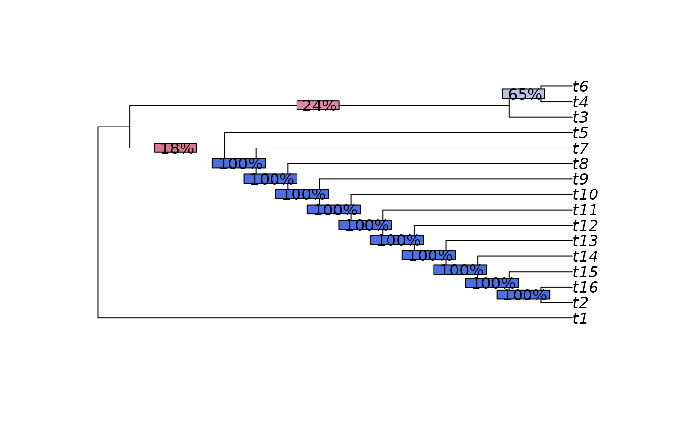
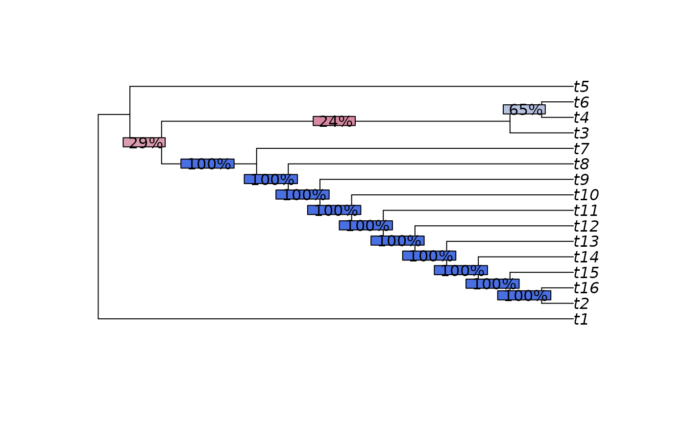

Analogous to the Maximum Clade Credibility tree:
select the tree from a posterior distribution whose clades have the
highest information content.
Generate the MCC tree by specifying info = "credibility".
See also
Other summary trees:
TransferConsensus()
Examples
library("TreeTools", quietly = TRUE)
trees <- as.phylo(24:40, 16)
# Maximum Clade Information tree
mci <- MCITree(trees)
SplitwiseInfo(mci)
#> [1] 133.8514
plot(mci)
p <- SplitFrequency(mci, trees) / length(trees)
LabelSplits(mci, round(p * 100), "%", bg = SupportColor(p))

# \donttest{
# Compare with Maximum Clade Credibility tree
mcc <- MCITree(trees, "credibility")
plot(mcc)
p <- SplitFrequency(mcc, trees) / length(trees)
LabelSplits(mcc, round(p * 100), "%", bg = SupportColor(p))

SplitwiseInfo(mcc)
#> [1] 128.5908
# }